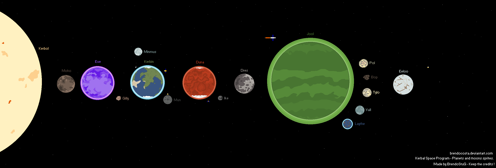

Кербал Спейс Программ
Система
В системе КСП 7 планет и 9 лун вот система:

КЕРБОЛ
ВЕРСИИ:
0.18.2
Обновлено изображение поверхности.
0.17
Добавлена актуальная модель, новый спрайт/эффект горения, изменён размер.
0.14
Добавлена твёрдая поверхность (гладкая невидимая поверхность на ~4500-4700 км над номинальным радиусом).
0.12
Добавлена гравитация, номинальный радиус 65,400 км.
0.11
Стало возможным достичь Кербола.
0.7.3
Первое появление.
У Кербола 2 слоя атмосферы но у него нет поверхности.